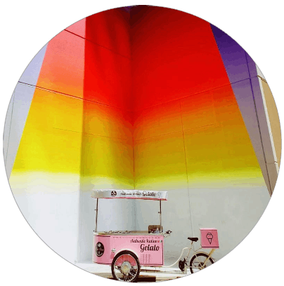

Dolce Bacio Gelato concept started with the dream of an Italian couple to bring the authentic and sophisticated flavors of Italy outside its borders, exporting one of the country’s most iconic food products: Gelato.
Established in 2015, Dolce Bacio has quickly grown in popularity, becoming a solid and well established reality. The unmistakable pink Gelato Bike pops up around town for all sorts of events, such as weddings, parties, school and corporate occasions.

Today, the tradition continue with owner Stefania Cimini, a native of Italy, who takes pride in making Gelato without compromises, 100% authentic, heart & soul Italian.
Dolce Bacio is a virtual brand operating from a Cloud Kitchen. You can find it in restaurants and event centers around town, you can hire it to Wow your guests at your next event, or you can have it delivered right to your door through the major third party delivery services.
Our gelato is made from scratch daily using all-natural ingredients sourced from Italy, crafted with the highest grade, state-of-the-art machinery also imported from Italy, ensuring consistent quality and freshness.
With our Italian expertise and high quality artisan Gelato, Dolce Bacio delivers a superior tasting experience and brings you a touch of true Italian atmosphere. Enjoy!